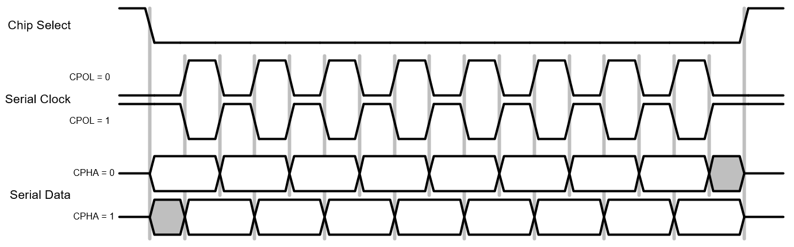
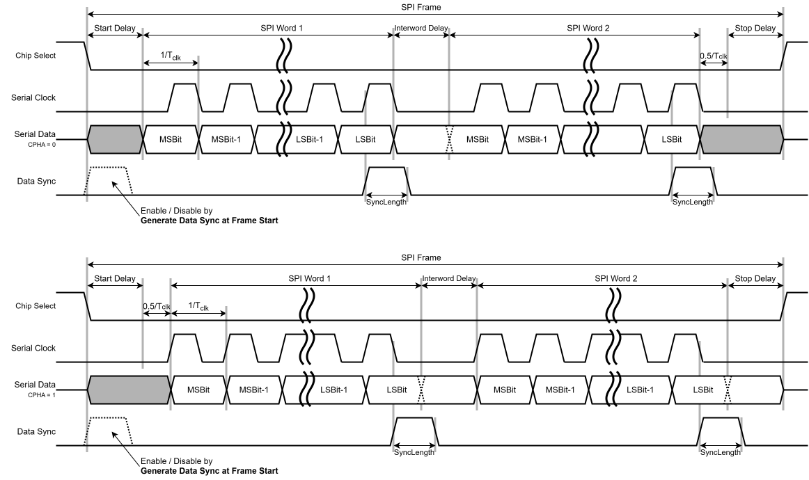
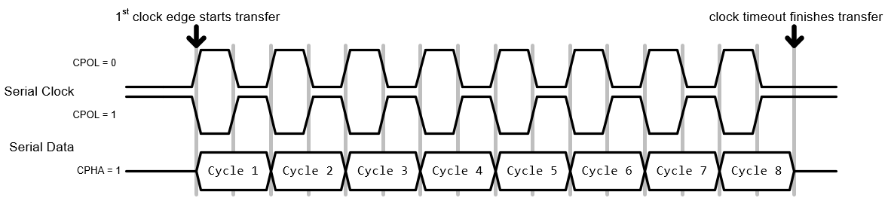
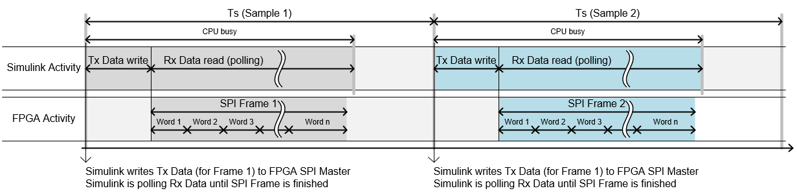
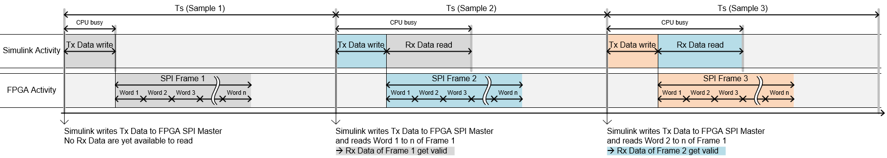
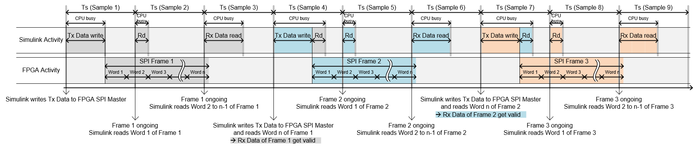
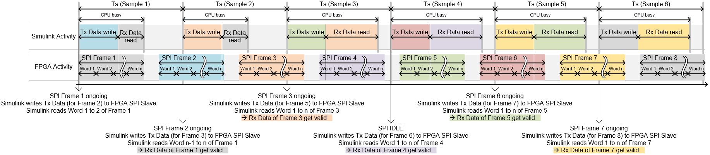
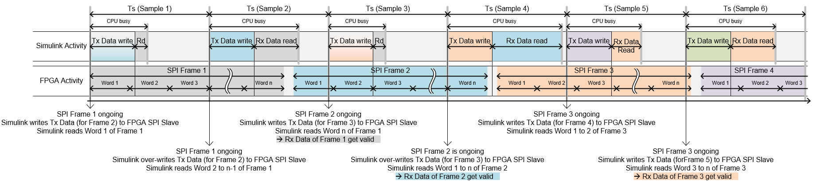

SPI Usage Notes
SPI Usage Notes — Usage information about the I/O module
CPOL and CPHA
The effect of the CPOL and CPHA parameters on the polarity and phase of the SPI lines:

The sampling and propagation of the data (for both master and slave) behave as follows:
At CPOL=0 the base value of the clock is zero:
For CPHA=0, serial data are captured on the serial clock's rising edge (low→high transition) and are propagated on a falling edge (high→low clock transition)
For CPHA=1, serial data are captured on the serial clock's falling edge and are propagated on a rising edge
At CPOL=1 the base value of the clock is one (inversion of CPOL=0):
For CPHA=0, serial data are captured on the serial clock's falling edge and are propagated on a rising edge
For CPHA=1, serial data are captured on the serial clock's rising edge and are propagated on a falling edge
Frame Timing Diagram
The following is a sample timing diagram of the signal generated/read by the SPI master/slave module:

A complete SPI frame consists of:
a start delay at the beginning of the SPI frame
a specific number of words, with each word consisting of a specific number of bits (word size)
an interword delay that is inserted between all separate words
a stop delay at the end of the SPI frame
The total data payload of the frame is equal to the number of words multiplied by the number of bits.
SPI Transfer Without Chip Select
If SPI is running in Slave mode and operation without chip select is selected, the transfer start and stop is defined as shown below:

Since the first clock edge is used to detect a frame start, CPHA=1 must be selected.
SPI Transfer Timing with Synchronized Master
In this mode, a new SPI frame is started at every sample step and the data received from the slave are available in the same sample step.
The following is a sample timing diagram of the SPI transfer scheme in master mode with the Sync Mode parameter set:

At every new simulation sample, the master Tx data are written to the FPGA and a new SPI frame is initiated. Simulink actively waits until the complete SPI transfer is finished and continuously polls the Rx data received from the FPGA. When the SPI frame is finished, all Rx data received are available and can be used for further processing in Simulink in the same simulation sample.
![[Note]](images/note.png) | Note |
|---|---|
This mode is useful if:
The simulation time must be greater than the SPI frame length, otherwise a CPU overload will occur owing to the CPU being blocked due to data polling during SPI transfer. |
SPI Transfer Timing with Non-Synchronized Master when Sample Time is Greater than SPI Frame Length
In this mode, a new SPI frame is started at every sample step and the data received from the slave are available in the next sample step.
The following is a sample timing diagram of the SPI transfer scheme in master mode with the Sync Mode parameter not set and when the sample time is greater than the SPI frame length:

At every new simulation sample, the master Tx data are written to the FPGA and a new SPI frame is initiated. All available Rx data received are then read by Simulink from the FPGA. If all the data of a complete frame have been read, Simulink marks the frame data valid signal.
The following list describes the behavior of the above timing illustration step by step:
Sample 1: A new SPI frame (Frame 1) is started. This is the first frame and therefore no received data are yet available
Sample 2: A new SPI frame (Frame 2) is started. All data of Frame 1 are available and the frame data valid signal is set
Sample 3: A new SPI frame (Frame 3) is started. All data of Frame 2 are available and the frame data valid signal is set
| Note |
|---|---|
This mode is useful if:
The CPU load is reduced when Sync Mode is not set due to the CPU not actively polling data. |
SPI Transfer Timing with Non-Synchronized Master when Sample Time is Less than SPI Frame Length
In this mode, a new SPI frame is started at a sample step when the SPI transfer is idle. The data received from the slave are available at different sample steps. As soon as all received data of a complete frame are read, data valid is set.
The following is a sample timing diagram of the SPI transfer scheme in master mode with the Sync Mode parameter not set and when the sample time is less than the SPI frame length:

At a simulation sample when the SPI is idle, the master Tx data are written to the FPGA and a new SPI frame is initiated. All available Rx data received are then read by Simulink from the FPGA. If all data of a complete frame have been read, Simulink marks the frame data valid signal.
The following list describes the behavior of the above timing illustration step by step:
Sample 1: A new SPI frame (Frame 1) is started. This is the first frame and therefore no received data are yet available.
Sample 2: Frame 1 is still ongoing, therefore no new frame is started. Word 1 of Frame 1 is finished on the SPI transfer and read by Simulink from the FPGA. The frame data valid signal is not set.
Sample 3: Frame 1 is still ongoing, therefore no new frame is started. All but the last word of Frame 1 is finished on the SPI transfer and read by Simulink from the FPGA. The frame data valid signal is not set.
Sample 4: SPI is idle, therefore a new SPI (Frame 2) is started. The last word of Frame 1 is read by Simulink from the FPGA. The frame data valid signal is set.
Sample 5: Frame 2 is still ongoing, therefore no new frame is started. Word 1 of Frame 2 is finished on the SPI transfer and read by Simulink from the FPGA. The frame data valid signal is not set.
Sample 6: Frame 2 is still ongoing, therefore no new frame is started. All but the last word of Frame 2 is finished on the SPI transfer and read by Simulink from the FPGA. The frame data valid signal is not set.
Sample 7: SPI is idle, therefore a new SPI (Frame 3) is started. The last word of Frame 2 is read by Simulink from the FPGA. The frame data valid signal is set.
Sample 8: Frame 3 is still ongoing, therefore no new frame is started. Word 1 of Frame 3 is finished on the SPI transfer and read by Simulink from the FPGA. The frame data valid signal is not set.
Sample 9: Frame 3 is still ongoing, therefore no new frame is started. All but the last word of Frame 3 is finished on the SPI transfer and read by Simulink from the FPGA. The frame data valid signal is not set.
| Note |
|---|---|
This mode is useful if:
The CPU load is reduced when Sync Mode is not set due to the CPU not actively polling data. |
SPI Transfer Timing with Slave when Sample Time is Greater than SPI Frame Length
In slave mode, there is no control over the SPI frame timing; the SPI master (which is an external device) cannot be synchronized.
The following is a sample timing diagram of the SPI transfer scheme in slave mode when the sample time is greater than the SPI frame length:

During a simulation sample, the slave Tx data are written to the FPGA from Simulink and all available Rx data are read from the FPGA.
To ensure data consistency, the FPGA places the Tx data from Simulink in the next available SPI frame. If there are several SPI frames within one time sample (no new Tx data for every SPI frame), the last written Tx data are repeated. The Rx data read are always taken from the last complete SPI frame that has been received before Simulink starts reading.
The following list describes the behavior of the above timing illustration step by step:
Sample 1: After Tx data are written to the FPGA, Frame 1 has already started, so these Tx data will be placed in Frame 2. At the start of the Rx data read from the FPGA, Word 1 & 2 of Frame 1 are finished and therefore read by Simulink. The frame data valid signal is not set (Rx data yet not complete)
Sample 2: After Tx data are written to the FPGA, Frame 2 is still ongoing, so these Tx data will be placed in Frame 3. At the start of the Rx data read from the FPGA, pending data of Frame 1 are read by Simulink. The frame data valid signal is set (Rx data of Frame 1 are complete)
Sample 3: After Tx data are written to the FPGA, Frame 4 has already started, so these Tx data will be placed in Frame 5. The Tx data of Frame 4 are the same as the Tx data of Frame 3. At the start of the Rx data read from the FPGA, Frame 3 was the last completed SPI frame and therefore all Frame 3 data are read by Simulink and the data valid signal is set. The Rx data of Frame 2 are skipped in this situation
Sample 4: After Tx data are written to the FPGA, Frame 5 is still ongoing, so these Tx data will be placed in Frame 6. At the start of the Rx data read from the FPGA, Frame 4 was the last completed SPI frame and therefore all Frame 4 data are read by Simulink and the data valid signal is set
Sample 5: After Tx data are written to the FPGA, Frame 6 is still ongoing, so these Tx data will be placed in Frame 7. At the start of the Rx data read from the FPGA, Frame 5 was the last completed SPI frame and therefore all Frame 5 data are read by Simulink and the data valid signal is set
Sample 6: After Tx data are written to the FPGA, Frame 8 has not yet started, so these Tx data will be placed in Frame 8. At the start of the Rx data read from the FPGA, Frame 7 was the last completed SPI frame and therefore all Frame 7 data are read by Simulink and the data valid signal is set. The Rx data of Frame 6 are skipped in this situation
SPI Transfer Timing with Slave when Sample Time is Less than SPI Frame Length
In slave mode, there is no control over the SPI frame timing: the SPI master (which is an external device) cannot be synchronized.
The following is a sample timing diagram of the SPI transfer scheme in slave mode when the sample time is less than the SPI frame length:

During a simulation sample, the slave Tx data are written to the FPGA from Simulink and all available Rx data are read from the FPGA.
To ensure data consistency, the FPGA places the Tx data from Simulink in the next available SPI frame. If a SPI transfer is spread over several sample times, the last complete written Tx data are placed in the next SPI frame. The Rx data read is spread over several samples.
The following list describes the behavior of the above timing illustration step by step:
Sample 1: After Tx data are written to FPGA, Frame 1 has already started, so these Tx data will be placed in Frame 2. At the start of the Rx data read from the FPGA, Word 1 of Frame 1 is finished and therefore read by Simulink. The frame data valid signal is not set (Rx data not yet complete)
Sample 2: After Tx data are written to FPGA, Frame 1 is still ongoing, so these Tx data will be placed in Frame 2. The Tx data that have been written in Sample 1 are overwritten in this case. At the start of the Rx data read from the FPGA, Word 3 to n-1 of Frame 1 are finished and therefore read by Simulink. The frame data valid signal is not set (Rx data not yet complete)
Sample 3: After Tx data are written to the FPGA, Frame 2 is still ongoing, so these Tx data will be placed in Frame 3. At the start of the Rx data read from the FPGA, Frame 1 is completed and the last word is read by Simulink. The frame data valid signal is set (Rx data of Frame 1 are complete)
Sample 4: After Tx data are written to the FPGA, Frame 3 has not yet started, so these Tx data will be placed in Frame 3. The Tx data that have been written in Sample 3 are overwritten in this case. At the start of the Rx data read from the FPGA, SPI Frame 2 is finished and therefore read by Simulink. The frame data valid signal is set (Rx data of Frame 2 complete)
Sample 5: After Tx data are written to the FPGA, Frame 3 is still ongoing, so these Tx data will be placed in Frame 4. At the start of the Rx data read from the FPGA, Word 1 & 2 of Frame 3 are finished and therefore read by Simulink. The frame data valid signal is not set (Rx data of Frame 3 not yet complete)
Sample 6: After Tx data are written to the FPGA, Frame 4 has already started, so these Tx data will be placed in Frame 5. At the start of the Rx data read from the FPGA, all the remaining words of Frame 3 are finished and therefore read by Simulink. The frame data valid signal is set (Rx data of Frame 3 are complete).